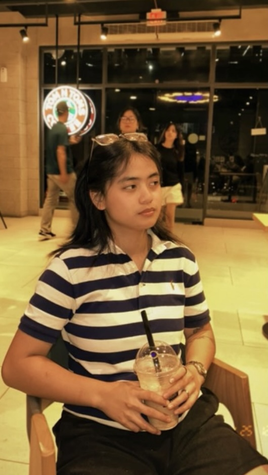

About Me
- My name is Shayne, and I am an ACT student dedicated to mastering front-end web development principles. Below are my core focus areas;
- Semantic HTML5 Structuring: Writing clean and accessible markup.
- CSS Layout and Optimization: Building centered layouts without frameworks.
- WCAG & Usability Standards: Ensuring accessibility and proper contrast.